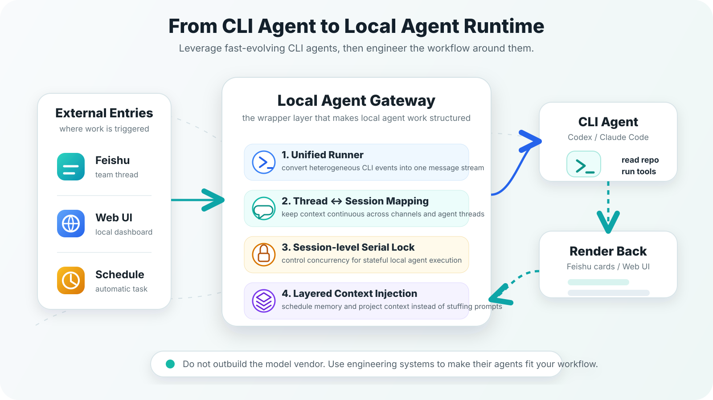
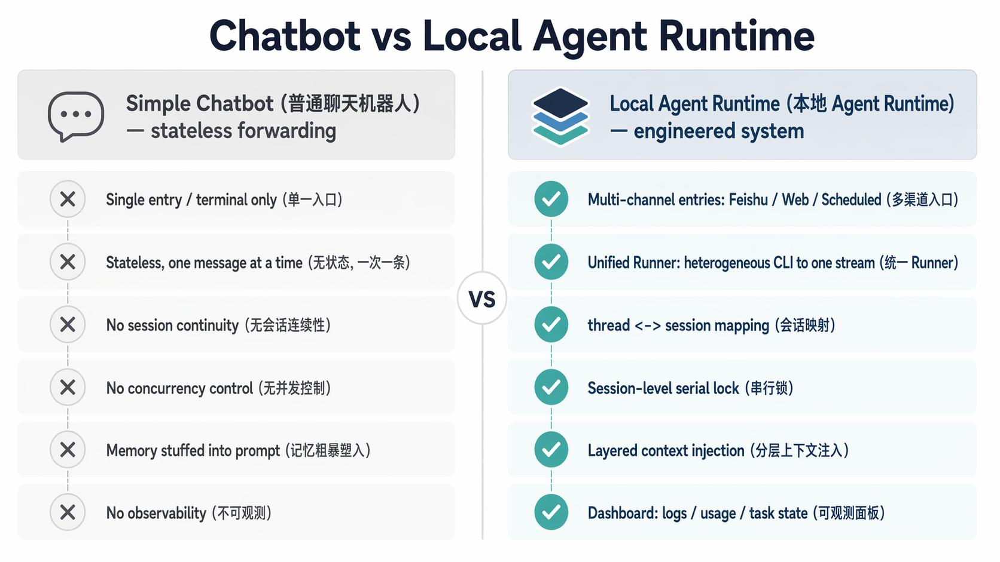
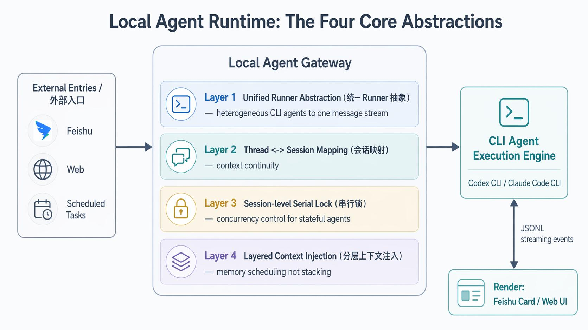

从 CLI Agent 到本地 Agent Runtime：一套包装本地 Agent 的工程模式¶

文档目标¶
- 解释 Codex / Claude Code 这类 CLI Agent 如何从“终端里的命令”变成“工作流里的 Runtime”
- 用 Agentara 作为具体例子，拆解包装本地 Agent 需要补齐的工程层
- 总结这套模式的适用场景、风险边界和可迁移原则
阅读受众¶
- 已经使用过 Codex、Claude Code 或类似 Coding Agent 的开发者
- 想把本地 Agent 接入飞书、Web、定时任务或知识库工作流的同学
- 希望理解 Agentara 这类项目工程本质，而不是只看安装和配置步骤的读者
0. Insight¶
- 本地 Agent 的难点不只在模型：真正决定它能否进入真实工作流的，是模型外面的消息通道、会话系统、任务队列、记忆注入和可观测 UI
- 包装层的本质是 Agent Gateway：它不替代 Codex / Claude Code 的执行能力，而是把这些 CLI Agent 包装成可交互、可持续、可拓展的本地 Agent Runtime
- 核心抽象只有四层：统一 Runner、thread ↔ session 映射、session 级串行锁、分层上下文注入——四层补齐，CLI Agent 就成了 Runtime
- 这套模式有明确边界：一旦远程消息能触发本地执行，权限、目录、审批、日志和可撤销性就必须先于功能扩展被设计清楚
- 比起造一个更强的 Agent，更现实的是借力：模型和 AI CLI 仍在高速迭代，工程侧真正的价值在于把这些能力接入稳定工作流——这也是本文真正想说的
本文会用开源项目 Agentara 作为贯穿全文的例子。
它同时支持 Claude Code 和 OpenAI Codex，通过飞书收消息，通过本地服务管理会话与任务，再把 Agent 的流式输出渲染回飞书或 Web Dashboard。
本文不展开 Agentara 的安装与配置，而是借这个项目回答一个更通用的问题：
一个本地 CLI Agent，需要补上哪几层工程，才能从终端命令变成工作流里的 Runtime。
1. 现象：为什么大家都在“包装”本地 Agent¶
过去我们使用 AI Agent 的主要入口是终端或 IDE：打开 Codex，输入任务，等它读代码、改文件、跑命令。这个形态直接、高效，但边界也很明显：
- 交互入口被锁在本地终端
- 长任务状态难以被外部系统感知
- 团队协作入口，比如飞书、Slack、群聊，很难直接接上
- 记忆、知识库、定时任务、外部触发器，都需要额外系统承载
- 多会话、多任务、取消、恢复、日志、用量展示，这些工程问题通常不会由 CLI 自己完整处理
于是，越来越多工具开始做同一类事情：
不自己训练模型，而是把已经存在的 CLI Agent 当作底层执行引擎，在它外面包一层交互与编排系统。
Agentara 就是这条路线上一个相当完整的例子。
这背后的趋势可以浓缩成一句话：
CLI Agent 正在从“命令行工具”，变成一种“本地 Agent Runtime”。
普通聊天机器人和本地 Agent Runtime 的差异，可以先用这张图压缩理解：

图 1：普通聊天机器人更像无状态消息转发；本地 Agent Runtime 则是一套围绕多入口、会话、并发、上下文和可观测性搭起来的工程系统。
那么要完成这层“包装”，工程上到底需要补齐什么？
接下来先用一个 Agent Gateway 流程图看整体链路，再逐层拆开。
2. 全貌：包装层的本质是一个 Agent Gateway¶
无论用什么技术栈实现，这类“包装层”的工程结构都高度相似——它本质上是一个 Agent Gateway。
flowchart LR
A["飞书 / Web / 定时任务"] --> B["MessageChannel<br/>外部入口适配"]
B --> C["MessageGateway<br/>统一消息路由"]
C --> D["TaskDispatcher<br/>排队、串行、取消"]
D --> E["SessionManager<br/>会话创建与恢复"]
E --> F["AgentRunner<br/>统一 Agent 接口"]
F --> G["Codex CLI / Claude Code CLI"]
G --> H["JSONL 流式事件"]
H --> I["消息渲染<br/>飞书卡片 / Web UI"]
这个 Gateway 流程图里最关键的不是某个具体模块，而是它做的一件事：
把“外部交互”和“本地 Agent 执行”彻底隔离开。
外部系统不必知道 Codex 怎么 resume，也不必理解 Claude Code 的 stream-json 格式；反过来，底层 Agent 也不必知道消息来自飞书、网页还是定时任务。
夹在中间的 Gateway，负责协议转换、会话映射、任务调度和输出渲染。
这正是 Gateway 的意义：
它本身不是能力，而是让能力可以被更多场景稳定调用。
而真正撑起这个 Gateway 的，是四个核心技术抽象。它们才是这套模式的骨架。
接下来四节，逐个拆开。

图 2：Gateway 内部的四个核心抽象——统一 Runner、会话映射、串行锁、分层上下文注入。下面四节逐一展开。
3. 抽象一：统一 Runner 接口——把异构 CLI 收敛成一种消息流¶
第一个问题是：底层 Agent 各不相同（Codex、Claude Code、未来还有更多），输出协议也各不相同。
包装层怎么做到不被某个具体 Agent 绑死？
答案是一个极小的抽象——统一 Runner 接口。它对底层 Agent 只提一个要求：能接收一条用户消息，并返回一个流式消息迭代器。以 Agentara 的 AgentRunner 为例：
interface AgentRunner {
readonly type: string;
stream(
userMessage: UserMessage,
options: AgentRunOptions,
): AsyncIterableIterator<SystemMessage | AssistantMessage | ToolMessage>;
}
这个抽象很小，却很关键——它把包装层与具体 Agent 实现彻底解耦了：
| Runner 类型 | 底层执行方式 | 输出协议 | Runner 做的事情 |
|---|---|---|---|
| Claude Code | claude --print --output-format stream-json |
stream-json | 解析 system / assistant / tool_result |
| Codex | codex exec --json |
JSONL events | 解析 thread、message、command、file_change、mcp_tool_call |
注意它没有把 Codex 伪装成一个标准的 OpenAI Chat API。
它做的是更工程化的事：
把不同 CLI Agent 的异构流式事件，映射成一套统一的内部消息类型。
这层映射看着只是适配代码，实则是整个系统能否扩展的命门。
未来要接入 Gemini CLI、Aider 或任何自研 Agent，只需实现一个新的 Runner——外层的飞书、任务队列、Web UI 全部可以复用。
把这层抽象落到 Codex 上是这样的：runner 启动一个子进程，
已有会话则带上 resume：
随后读取 stdout 中的 JSONL 事件，逐条转成内部消息。整个流程是这样流转的：
sequenceDiagram
participant User as 用户
participant Feishu as 飞书消息
participant Kernel as Gateway Kernel
participant Runner as CodexAgentRunner
participant Codex as codex exec --json
User->>Feishu: 在话题里发送任务
Feishu->>Kernel: message:inbound
Kernel->>Kernel: 解析 thread -> session
Kernel->>Runner: session.stream(userMessage)
Runner->>Codex: 启动子进程并传入 prompt
Codex-->>Runner: thread.started / item.completed / tool events
Runner-->>Kernel: assistant / tool / system message
Kernel-->>Feishu: 更新流式回复卡片
这里有三个通用要点，适用于任何 CLI Agent 的包装：
- CLI 始终是执行主体：读仓库、调工具、跑命令、改文件的是底层 Agent，包装层只负责调用与转译
- 结构化输出（
--json）是命门：没有它，外层只能读自然语言，无法区分最终回答、命令执行、文件修改、工具调用和错误 - resume 能力决定多轮会话是否成立：没有稳定的 resume，外部入口里的连续回复就很难对齐到底层 Agent thread
4. 抽象二：thread ↔ session 映射——多入口系统的上下文连续性¶
一旦交互入口从终端搬到飞书话题（thread），就冒出一个新问题：
下一条飞书回复，应该进入哪个 Agent 会话？
终端里这个问题不存在——一个终端窗口天然就是一个上下文。
但飞书是多话题、多人、异步的，消息流本身不携带“我属于哪个任务”的信息。
于是必须显式维护一张 thread 到 session 的映射表。
flowchart TB
A["飞书 thread_id"] --> B{"是否已有映射？"}
B -->|有| C["复用 session_id"]
B -->|没有| D["生成新的 session_id"]
D --> E["写入 SQLite<br/>feishu_threads"]
C --> F["resolveSession(session_id)"]
E --> F
F --> G{"session 是否存在？"}
G -->|不存在| H["createSession<br/>isNewSession = true"]
G -->|存在| I["resumeSession<br/>isNewSession = false"]
这个设计看着朴素，但它解决的恰恰是多入口系统里最容易翻车的问题：
上下文连续性。
没有这层映射，飞书只是一条消息流；有了它，一个 thread 才真正变成一个能被 Agent 持续理解的任务容器。
这也是这类系统与“简单 webhook 转发”的本质区别：
- 简单转发只处理“这一条消息”
- 会话映射处理的是“这一串消息属于同一个任务”，并能一路对齐到底层 Agent 的 thread
5. 抽象三：session 级串行锁——有状态 Agent 的并发控制¶
本地 Agent 有个很现实的特性：它不是普通的无状态 API。
一次 Codex 运行可能会读文件、改文件、跑命令、写入自己的 session 状态。如果同一个 session 里同时进来两条消息，让两个子进程并发跑，就可能出现：
- 两轮对话同时 resume 同一个 thread
- 同一个仓库被两个任务同时修改
- 后发的消息先完成，先发的消息反而后完成
- 用户看到的飞书回复顺序错乱
/stop不知道该停哪一个任务
所以这类系统的任务调度必须遵循一条核心策略：
同一 session 内串行执行，不同 session 之间可以并行执行。
实现上通常是按 session_id 维护一把锁（或一个串行队列）：同一 session 的任务排队执行，锁释放后才取下一个；不同 session 各持各的锁，互不阻塞。
换句话说，串行锁锁的是“同一 session 的任务队列”，而不是“子进程”本身。
flowchart LR
A["任务队列"] --> B["session A task 1"]
A --> C["session A task 2"]
A --> D["session B task 1"]
A --> E["session C task 1"]
B --> F["session A lock"]
C --> F
D --> G["session B lock"]
E --> H["session C lock"]
F --> I["A 内部串行"]
G --> J["B 可并行"]
H --> K["C 可并行"]
这正是从“聊天机器人”走向“Agent Runtime”必须补上的那层工程。
模型聪不聪明只是一个维度；能不能长期稳定运行，更取决于任务状态、并发控制、取消恢复和错误处理是否扎实。
6. 抽象四：分层上下文注入——是调度记忆，而不是堆砌记忆¶
最后一个抽象，关于“记忆”。我一开始以为记忆系统是某种神秘的模型能力，但读下来发现，在本地 Agent 工程里，它更像是一个上下文调度问题。
以 Codex 为例，可注入上下文的位置就有很多种，各自承担不同角色：
AGENTS.md：项目级稳定规则- prompt 前缀：本轮任务相关的动态上下文
- MCP resource / tool：按需读取的外部知识
- 本地检索结果：从知识库、日报、历史记录中取出的相关片段
- session summary：长会话压缩后的历史状态
- workspace 文件：让 Agent 直接通过文件系统读取上下文
flowchart TB
A["用户消息"] --> F["本轮 Prompt"]
B["AGENTS.md<br/>项目规则"] --> F
C["长期记忆<br/>用户偏好 / 历史决策"] --> E["检索与筛选"]
D["本地知识库<br/>Obsidian / repo docs"] --> E
E --> F
F --> G["Codex / Claude Code"]
G --> H["执行结果"]
H --> I["日志 / session / memory 更新"]
这也解释了为什么“记忆”不能粗暴地全塞进去。上下文不是越多越好，它至少带来三类风险：
- 污染风险：旧规则覆盖当前项目规则
- 预算风险：无关信息挤占真正重要的上下文
- 权限风险：远程消息可能诱导 Agent 读取或发送不该碰的信息
所以更成熟的做法不是“有记忆就注入”，而是先做判断：
这条记忆与当前任务是否相关、是否仍然有效、是否应当覆盖项目原生规则。
一句话，上下文工程不是堆消息，而是设计信息在正确时机进入模型视野的方式。
7. 把四层拼起来：能力的拓展空间¶
统一 Runner、会话映射、串行锁、分层上下文——这四层一旦补齐，本地 Agent 就不再只是一个“会回答的模型”。
它会成为一个可以被系统调用、被用户协作、被长期维护的 Runtime。拓展空间随之打开：
| 可拓展方向 | 具体形态 | 背后复用的能力 |
|---|---|---|
| 多渠道入口 | 飞书、Slack、Telegram、邮件、网页控制台 | MessageChannel / MessageGateway |
| 长期任务 | 定时总结、PR 监控、知识库整理、日报生成 | TaskDispatcher / Scheduler |
| 个人知识助理 | Codex + Obsidian + 本地记忆 | 分层上下文注入 |
| 仓库维护助手 | 自动读 repo、生成 issue、检查 PR、补测试 | 统一 Runner / workspace |
| 团队协作 Agent | 群聊里创建任务、跟进状态、同步结论 | 会话映射 / 流式渲染 |
| 可观测面板 | session、usage、日志、任务状态、工具调用 | Web Dashboard / 本地数据库 |
真正具备迁移价值的，不是某一段代码，而是这组工程问题：
- 外部事件，如何变成标准的内部消息？
- 一条消息，如何找到正确的会话？
- 一个会话，如何恢复到底层 Agent 的 thread？
- 同一会话里的多个任务，如何串行？
- Agent 的工具调用和文件修改，如何渲染给用户？
- 长期记忆如何注入，又不污染上下文？
- 失败、取消、重试、日志和用量，如何对用户可见？
8. 边界和风险¶
这套模式很有想象空间，但不能只盯着兴奋点看。因为它连接的是远程消息入口和本地执行环境，风险天然比普通聊天机器人高。
| 风险点 | 典型场景 | 影响 | 处理建议 |
|---|---|---|---|
| 远程消息触发本地命令 | 飞书、Slack、Web 消息直接触发 Codex 执行 | 可能访问本地文件、修改仓库、执行危险命令 | 明确运行目录、权限范围、审批策略和日志记录 |
| CLI 协议不是稳定 API | 依赖 codex exec --json 或 claude --output-format stream-json 解析事件 |
CLI 输出字段变化会影响 Runner 适配 | 用测试覆盖 assistant message、command execution、file change、MCP tool call、error / failed turn、session started / resume |
| 记忆注入覆盖项目规则 | 长期记忆、个人偏好、项目规则同时进入上下文 | 旧规则可能污染当前项目判断 | 采用“检索 → 筛选 → 注入”，让 AGENTS.md、CLAUDE.md、README 等项目原生规则保持更高优先级 |
| 用量展示被误读成 billing | 从本地 session 日志推断 token 和 rate limit telemetry | 用户可能误以为这是官方账单或精确用量 | 明确标注为本地速率限制可见性，不包装成官方 billing 指标 |
这里尤其需要注意权限问题。
如果飞书里的一句话就能触发 Codex 在本地执行命令，系统必须先回答几个问题：
- 运行目录在哪里
- 是否允许修改文件
- 是否允许执行危险命令
- 是否允许访问用户目录
- 是否允许读取密钥、token 或浏览器状态
Agentara 当前对 Codex 采用了绕过审批和 sandbox 的执行方式，这让交互更顺滑，但也意味着它更适合个人受控环境，不建议直接暴露给不可信群聊。
如果要放到团队群或更开放的入口里，安全边界必须先于功能扩展被设计清楚。
9. 为什么是“借力”，而不是“替代”¶
前面八节讲的都是“怎么做”。
但在动手之前，其实还有一个更上位的判断：
面对快速迭代的模型和 AI CLI，工程侧到底该把力气花在哪里？
我的结论是：更现实的方向是基于 Codex / Claude Code 这类工具做包装，而不是从零开始做一个“更强的 Agent”。
这类 AI CLI 和它背后的模型能力仍在高速迭代：模型推理、工具调用、代码理解、终端执行，以及和 IDE / CLI 的结合，厂商的投入会持续把这层底座往前推。
对个人或小团队来说，真正现实的策略不是在这些基础能力上正面超过它们，而是把它们当成一层持续升级的底座。
如果说第 7 节回答的是“能拓展出什么”，那么这里想回答的是“在资源有限时，应该优先往哪里投”：
| 投入方向 | 要解决的问题 |
|---|---|
| 接入真实协作入口 | 让 Agent 不只停留在终端，而是进入飞书、Web、定时任务等实际工作入口 |
| 分层上下文管理 | 让 Agent 能拿到正确的项目规则、知识库信息和任务现场，而不是简单堆 prompt |
| 会话与任务调度 | 降低多轮对话、并发执行、长任务恢复带来的状态混乱 |
| 权限与可观测性 | 用审批、日志、任务状态和 Dashboard 控制远程触发本地执行的风险 |
| 工作场景适配 | 把通用 AI CLI 能力转成适合个人知识库、团队协作和仓库维护的工作模式 |
换句话说，AI 工程应用的价值不一定在于“造一个新的模型能力”。
更重要的是：
把已经快速演进的 AI 能力，组织成更稳定的工作流和工作模式。
10. 一点个人理解：拓展本地 Agent 的真正含义¶
最初看 Agentara，我关注的是“能不能把 Codex 接到飞书”。
但顺着这套模式拆下来，我最大的收获其实是一句更普适的话：
本地 Agent 的能力，不只由模型决定，而是由模型外面那层工程系统共同决定。
模型负责推理、读代码、调工具、执行修改；包装层负责让这些能力进入真实场景：
- 飞书提供协作入口
- session 提供上下文连续性
- task queue 提供执行秩序
- Web UI 提供可见状态
- memory 提供长期上下文
- runner 把 CLI Agent 变成可流式调用的 Runtime
这让我重新理解了“拓展 Codex”的含义：它不一定是改 Codex 本身，也不一定是训练新模型。
很多时候，真正有效的拓展发生在模型外部。
它做的是把 Agent 接入正确的入口，喂它正确的上下文，约束它的执行边界，记录它的状态，再把结果回流到用户真正工作的地方。
11. 可迁移原则¶
如果要把这套经验迁移到自己的 Agent 工程实践里，我会优先记住这五条原则：
| 原则 | 核心含义 | 实践提醒 |
|---|---|---|
| 先设计运行时，再设计 prompt | 长任务 Agent 不能只靠 prompt | 先想清楚任务容器、会话、状态、取消、恢复、日志和交付物分别落在哪里 |
| 把 CLI Agent 当成本地执行引擎 | Codex / Claude Code 的价值不只是回答，而是读 repo、跑命令、调工具、改文件 | 外层系统应该尊重并包装这份能力，不要把它降级成普通聊天模型 |
| 会话映射是多入口系统的地基 | 飞书 thread、Web session、定时任务、底层 Agent thread 必须能彼此对齐 | 否则系统表面能跑，实际很容易发生上下文漂移 |
| 上下文工程要分层 | 稳定规则、任务现场、长期记忆、历史摘要、本地文件不应该混成一坨 | 不同信息应在不同阶段、以不同优先级进入 Agent 视野 |
| 安全边界要早于功能扩展 | 远程消息一旦能触发本地执行，权限就变成基础设施 | 目录、审批、日志和可撤销性需要在功能扩展前设计清楚 |
结尾¶
绕开具体项目来看，这套模式给我最大的启发是一个更大的方向：
本地 CLI Agent，可以成为个人和团队工作流里的 Runtime。
它们不必变成云端 API，也不必被重新包装成又一个聊天产品。
只要外层系统能补齐统一 Runner、会话映射、任务调度、分层上下文和安全边界这几层工程，本地 Agent 就能自然地走进更多真实工作场景。
Agentara 只是证明了这条路走得通——而这套模式，你完全可以拿去搭自己的那一个。